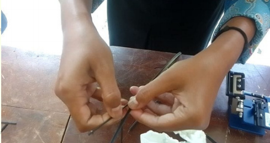

LAPORAN HASIL PENYAMBUNGAN KABEL FIBER OPTIK
ALAT DAN BAHAN
- Kabel Fiber Optik
- Stripper
- Cleaver
- Stripper Dropcore
- Fusion Splicer
- Tisu
- Alkohol
- Smurf dan Visual Fault Locator (VFL)
LANGKAH-LANGKAH PENYAMBUNGAN KABEL FIBER OPTIK
- Ambil kabel fiber optik dan potong bagian tengah antara kabel pelindung dan corenya menggunakan stripper.

- Kupas kabel Fiber Optik menggunakan stripper dropcore untuk menghilangkan lapisan pelindung luar dan lapisan pelindung serat
- Setelah kabel terkelupas,serat optik yang masih berwarna biru dibersihkan menggunakan stripper
- Setelah serat optik terlihat bening dibersihkan menggunakan tisu yangsudah diberi alkohol
- Setelah bersih, selanjutnya serat fo dipotong mengunakan cleaver dengan hati hati agar hasilnya bagus
- Setelah bersih, serat fiber dipotong dengan rapi,serat fiber ditaruh ke fucion splicer untuk penyambungan

- Masukkan satu buah smurf ke salah satu serat fiber
- Setelah kedua serat fiber ditaruh ke fucion splicer,tutup penutupnya dan nyalakan tombol warna hijau untuk penyambungan kedua serat.
- Saat proses penyambungan kita bisa melihatnya melalui layar di fucion splicer.
- Selanjutnya smurf yang sudah dimasukkan ke salah satu serat kabel ditaruh/ digeser ke bagian serat yang telah disambung sebagai alat pelindung.
- Setelahnya masukkkan kabel yang sudah diberi pelindung ke bagian heater dii fucion splicer untuk melelehkan dan meleburkan ujung serat optik sehingga menghasilkan penyambungan permanen
- Selanjutnya kabel yang sudah tersambung secara permanen, dipasangi konektor.
- Setelah kabel dipasangi konektor, langkah selanjutnya yaitu mengidentifikasi dan menemukan lokasi kerusakan menggunakan alat bernama Visual Fault Locator (VFL)
- Cara mengecek menggunakan VFL yaitu dengan memasukkan ujung kabel serat optik yang telah dipasang konektor ke port pada VFL. Nyalakan VFL, lalu periksa apakah ada cahaya merah yang keluar dari ujung kabel yang lain. Jika cahaya merah terlihat di seluruh kabel hingga ujungnya, kabel dan konektor terpasang dengan baik.